أنماط JavaScript
الاستيراد عند التفاعل (Import On Interaction)
tl;dr: حمّل الموارد غير الحرجة كسولًا (lazy loading) عندما يتفاعل المستخدم مع واجهة المستخدم التي تتطلبها
قد تحتوي صفحتك على شيفرة أو بيانات لمركبة أو مورد ليس ضروريًا فورًا. على سبيل المثال، قد يكون جزء من واجهة المستخدم لا يراه المستخدم إلا إذا نقر أو مرّر على أجزاء من الصفحة. ينطبق هذا على أنواع كثيرة من شيفرة الطرف الأول (first-party) التي تكتبها، وينطبق أيضًا على عناصر الطرف الثالث (third-party) مثل مشغلات الفيديو أو أدوات الدردشة، حيث تحتاج عادة إلى النقر على زر لعرض الواجهة الرئيسية.
قد يؤدي تحميل هذه الموارد بشكل عاجل (أي فورًا) إلى حجب الخيط الرئيسي إذا كانت مكلفة، مما يؤخر الوقت الذي يصبح فيه المستخدم قادرًا على التفاعل مع أجزاء أكثر أهمية في الصفحة. وقد يؤثر ذلك في مقاييس جاهزية التفاعل (performance metrics) مثل تأخير أول إدخال (First Input Delay) وإجمالي وقت الحجب (Total Blocking Time) والزمن حتى التفاعل (Time to Interactive). بدلاً من تحميل هذه الموارد فورًا، يمكنك تحميلها في لحظة أكثر ملاءمة، مثل:
- عندما ينقر المستخدم للتفاعل مع هذا المكوّن للمرة الأولى
- عندما يمرر المستخدم المكوّن إلى داخل إطار العرض
- أو تأجيل تحميل المكوّن حتى يصبح المتصفح خاملًا (عبر requestIdleCallback).
على مستوى عالٍ، طرق تحميل الموارد هي:
- عاجل (Eager) - حمّل المورد فورًا (الطريقة المعتادة لتحميل النصوص البرمجية)
- كسول (التقسيم حسب المسار) - حمّل عندما ينتقل المستخدم إلى مسار أو مكوّن
- كسول (عند التفاعل) - حمّل عندما ينقر المستخدم على واجهة المستخدم (مثل Show Chat)
- كسول (في إطار العرض) - حمّل عندما يمرر المستخدم باتجاه المكوّن
- الجلب المسبق (prefetch) - حمّل قبل الحاجة، لكن بعد تحميل الموارد الحرجة
- التحميل المسبق (preload) - حمّل بشكل عاجل، بمستوى من الأولوية أعلى
ينبغي ألا يُستخدم الاستيراد عند التفاعل مع شيفرة الطرف الأول إلا إذا تعذّر عليك جلب الموارد قبل التفاعل. ومع ذلك، يظل النمط ذا صلة كبيرة مع شيفرة الطرف الثالث، حيث تريد عادةً تأجيلها إذا لم تكن حرجة إلى وقت لاحق. ويمكن تحقيق ذلك بطرق كثيرة، مثل التأجيل حتى التفاعل، أو حتى يصبح المتصفح خاملًا، أو باستخدام استدلالات أخرى.
الاستيراد الكسول لشيفرة الميزات عند التفاعل نمط مستخدم في سياقات كثيرة سنغطيها في هذه المقالة. أحد الأماكن التي ربما استخدمته فيها من قبل هو Google Docs، حيث أجّلوا تحميل 500KB من السكربت الخاصة بميزة المشاركة حتى يتفاعل المستخدم.
مكان آخر يمكن أن يناسبه الاستيراد عند التفاعل جيدًا هو تحميل عناصر الطرف الثالث.
تحميل واجهة الطرف الثالث «المزيّفة» باستخدام facade
قد تستورد سكربتًا من طرف ثالث وتكون لديك تحكم أقل في ما تعرضه أو في وقت تحميله للشيفرة. أحد خيارات تنفيذ التحميل عند التفاعل مباشرًا هو استخدام facade. الـfacade هو «معاينة» أو «عنصر نائب» بسيط لمكوّن أكثر كلفة، حيث تحاكي التجربة الأساسية، مثل صورة أو لقطة شاشة. هذا هو المصطلح الذي كنا نستخدمه لهذه الفكرة في فريق Lighthouse.
عندما ينقر المستخدم على «المعاينة» (الـfacade)، يتم تحميل شيفرة المورد. يحد ذلك من دفع المستخدمين لتكلفة تجربة ميزة لن يستخدموها. وبالمثل، يمكن للـfacades استخدام preconnect للموارد الضرورية عند التحويم.
تضاف موارد الأطراف الخارجية غالبًا إلى الصفحات دون مراعاة كاملة لكيفية اندماجها في التحميل العام للموقع. يمكن للسكربتات المحمّلة بشكل متزامن من الطرف الثالث أن تحجب محلّل المتصفح وتؤخر الترطيب (hydration). إذا أمكن، ينبغي تحميل سكربتات 3P باستخدام
asyncأوdefer(أو نهج أخرى) لضمان عدم حرمان سكربتات 1P من نطاق الشبكة. ما لم تكن حرجة، يمكن أن تكون مرشحة جيدة للتحويل إلى تحميل متأخر مؤجل باستخدام أنماط مثل الاستيراد عند التفاعل.
تضمينات مشغل الفيديو
مثال جيد على «facade» هو YouTube Lite Embed من Paul Irish. يوفر هذا Custom Element الذي يأخذ معرّف فيديو YouTube ويعرض صورة مصغرة وزر تشغيل بسيطين. يؤدي النقر على العنصر إلى تحميل ديناميكي لشيفرة تضمين YouTube الكاملة، ما يعني أن المستخدمين الذين لا ينقرون على التشغيل لن يدفعوا تكلفة جلبها ومعالجتها.
تُستخدم تقنية مشابهة في الإنتاج على بعض مواقع Google. في Android.com، بدلاً من تحميل مشغل فيديو YouTube المضمّن بشكل عاجل، تُعرض للمستخدم صورة مصغرة مع زر مشغل مزيّف. وعندما ينقرون عليه، تُحمّل نافذة منبثقة تشغّل الفيديو تلقائيًا باستخدام تضمين مشغل YouTube الكامل:
المصادقة (Authentication)
قد تحتاج التطبيقات إلى دعم المصادقة مع خدمة عبر JavaScript SDK من جانب العميل. وقد تكون هذه المكتبات كبيرة أحيانًا ذات تكاليف تنفيذ JavaScript ثقيلة، وقد لا ترغب في تحميلها مسبقًا إذا لم يكن المستخدم سوف يسجل الدخول. بدلاً من ذلك، استورد مكتبات المصادقة ديناميكيًا عندما ينقر المستخدم على زر «تسجيل الدخول»، مع إبقاء الخيط الرئيسي أكثر توفرًا أثناء التحميل الأولي.
عناصر الدردشة (Chat widgets)
حسّن تطبيق Calibre أداء الدردشة الحية المستندة إلى Intercom بنسبة 30% عبر استخدام نهج facade مشابه. نفذوا زر دردشة حية «مزيّفًا» سريع التحميل باستخدام CSS وHTML فقط، وكان النقر عليه يحمّل حزم Intercom الخاصة بهم.
أشار Postmark إلى أن عنصر الدردشة الخاص بالمساعدة كان يُحمّل دائمًا بشكل عاجل، رغم أن العملاء استخدموه أحيانًا فقط. كان العنصر يجلب 314KB من السكربت، أكثر من حجم صفحتهم الرئيسية بالكامل. لتحسين تجربة المستخدم، استبدلوه بنسخة مزيّفة باستخدام HTML وCSS، وحمّلوا النسخة الحقيقية عند النقر. خفّض هذا التغيير الزمن حتى التفاعل من 7.7 ثانية إلى 3.7 ثانية.
أخرى
استخدم Ne-digital مكتبة React للتمرير المتحرك إلى أعلى الصفحة عندما ينقر المستخدم على زر «التمرير إلى الأعلى». بدلاً من تحميل تبعية react-scroll بشكل عاجل، حمّلوها عند التفاعل مع الزر، مما يوفر نحو 7KB:
handleScrollToTop() {
import('react-scroll').then(scroll => {
scroll.animateScroll.scrollToTop({
})
})
}
كيف نستورد عند التفاعل؟
JavaScript خام
في JavaScript، يتيح الاستيراد الديناميكي import() التحميل الكسول للوحدات ويعيد Promise، ويمكن أن يكون قويًا جدًا عند تطبيقه بشكل صحيح. فيما يلي مثال على استخدام الاستيراد الديناميكي في مستمع حدث زر لاستيراد وحدة lodash.sortby ثم استخدامها.
const btn = document.querySelector("button");
btn.addEventListener("click", (e) => {
e.preventDefault();
import("lodash.sortby")
.then((module) => module.default)
.then(sortInput()) // use the imported dependency
.catch((err) => {
console.log(err);
});
});
قبل الاستيراد الديناميكي، أو في حالات الاستخدام التي لا يناسبها جيدًا، كان خيار آخر حقن السكربتات ديناميكيًا في الصفحة باستخدام محمّل سكربتات قائم على Promise (انظر هنا التطبيق الكامل الذي يوضح facade لتسجيل الدخول):
const loginBtn = document.querySelector("#login");
loginBtn.addEventListener("click", () => {
const loader = new scriptLoader();
loader
.load(["//apis.google.com/js/client:platform.js?onload=showLoginScreen"])
.then(({ length }) => {
console.log(`${length} scripts loaded!`);
});
});
React
لنتخيل لدينا تطبيق دردشة يحتوي على و و`` مكوّنًا (مدعومًا بـ emoji-mart، وهو 98KB بعد التصغير وضغط gzip). من الشائع تحميل جميع هذه المكوّنات بشكل عاجل عند التحميل الأولي للصفحة.
import MessageList from './MessageList';
import MessageInput from './MessageInput';
import EmojiPicker from './EmojiPicker';
const Channel = () => {
...
return (
<div>
<MessageList />
<MessageInput />
{emojiPickerOpen && <EmojiPicker />}
</div>
);
};
تقسيم تحميل هذا العمل نسبيًا مباشر باستخدام تقسيم الشيفرة (code splitting). تجعل طريقة React.lazy من السهل تقسيم شيفرة تطبيق React على مستوى المكوّن باستخدام الاستيرادات الديناميكية. توفر دالة React.lazy طريقة مدمجة لفصل المكوّنات في التطبيق إلى أجزاء JavaScript منفصلة بجهد ضئيل جدًا. ثم يمكنك معالجة حالات التحميل عندما تقترن بمكوّن Suspense.
import React, { lazy, Suspense } from 'react';
import MessageList from './MessageList';
import MessageInput from './MessageInput';
const EmojiPicker = lazy(
() => import('./EmojiPicker')
);
const Channel = () => {
...
return (
<div>
<MessageList />
<MessageInput />
{emojiPickerOpen && (
<Suspense fallback={<div>Loading...</div>}>
<EmojiPicker />
</Suspense>
)}
</div>
);
};
يمكننا توسيع هذه الفكرة لاستيراد شيفرة مكوّن Emoji Picker فقط عندما ينقر المستخدم على أيقونة Emoji في ``، بدلاً من استيرادها بشكل عاجل عندما يحمّل التطبيق أولًا:
import React, { useState, createElement } from "react";
import MessageList from "./MessageList";
import MessageInput from "./MessageInput";
import ErrorBoundary from "./ErrorBoundary";
const Channel = () => {
const [emojiPickerEl, setEmojiPickerEl] = useState(null);
const openEmojiPicker = () => {
import(/* webpackChunkName: "emoji-picker" */ "./EmojiPicker")
.then((module) => module.default)
.then((emojiPicker) => {
setEmojiPickerEl(createElement(emojiPicker));
});
};
const closeEmojiPickerHandler = () => {
setEmojiPickerEl(null);
};
return (
<ErrorBoundary>
<div>
<MessageList />
<MessageInput onClick={openEmojiPicker} />
{emojiPickerEl}
</div>
</ErrorBoundary>
);
};
Vue
في Vue.js، يمكن تحقيق نمط الاستيراد عند التفاعل المماثل بعدة طرق مختلفة. إحدى الطرق هي استيراد مكوّن Vue Emojipicker ديناميكيًا باستخدام استيراد ديناميكي ملفوف في دالة، أي () => import("./Emojipicker"). وبهذه الطريقة، يقوم Vue.js عادةً بتحميل المكوّن كسولًا عندما يحتاج إلى عرضه.
يمكننا بعد ذلك جعل التحميل الكسول مشروطًا بتفاعل المستخدم. باستخدام v-if شرطي على div الأصل للـpicker، الذي يتم تبديله بالنقر على زر، يمكننا جلب مكوّن Emojipicker وعرضه بشكل شرطي عندما ينقر المستخدم.
<template>
<div>
<button @click="show = true">Load Emoji Picker</button>
<div v-if="show">
<emojipicker></emojipicker>
</div>
</div>
</template>
<script>
export default {
data: () => ({ show: false }),
components: {
Emojipicker: () => import("./Emojipicker"),
},
};
</script>
ينبغي أن يكون نمط الاستيراد عند التفاعل ممكنًا مع معظم الأطر والمكتبات التي تدعم التحميل الديناميكي للمكوّنات، بما في ذلك Angular.
الاستيراد عند التفاعل مع شيفرة الطرف الأول كجزء من التحميل التدرّجي
التحميل عند التفاعل جزء رئيسي أيضًا من طريقة Google في التعامل مع التحميل التدرّجي في تطبيقات كبيرة مثل Flights وPhotos. لتوضيح ذلك، لننظر إلى مثال سابق قدّمه Shubhie Panicker.
تخيل أن مستخدمًا يخطط لرحلة إلى Mumbai في الهند ويزور Google Hotels للاطلاع على الأسعار. يمكن تحميل جميع الموارد اللازمة لهذا التفاعل بشكل عاجل مسبقًا، لكن إذا لم يكن المستخدم قد اختار أي وجهة، فستكون HTML/CSS/JS اللازمة للخريطة غير ضرورية.
في أبسط سيناريو للتحميل، تخيل أن Google Hotels يستخدم العرض من جانب العميل الساذج (CSR). ستُنزَّل كل الشيفرة وتُعالَج مسبقًا: HTML، ثم JS وCSS، ثم جلب البيانات، من أجل العرض فقط بعد توفر كل شيء. لكن هذا يترك المستخدم ينتظر طويلًا دون أي شيء معروض على الشاشة. وقد تكون نسبة كبيرة من JavaScript وCSS غير ضرورية.
بعد ذلك، تخيل أن هذه التجربة نُقلت إلى العرض من جانب الخادم (SSR). سنتيح للمستخدم الحصول على صفحة مكتملة بصريًا في وقت أبكر، وهذا رائع، لكنها لن تكون تفاعلية حتى تُجلب البيانات من الخادم ويكمل إطار العمل في العميل عملية الترطيب.
يمكن أن يكون SSR تحسينًا، لكن قد يمر المستخدم بتجربة «الوادي الغريب» حيث تبدو الصفحة جاهزة، لكنه لا يستطيع النقر على أي شيء. ويشار إلى ذلك أحيانًا بالنقرات الغاضبة، إذ يميل المستخدمون إلى النقر مرارًا وتكرارًا من الإحباط.
عد إلى مثال البحث في Google Hotels، وإذا تكبيرنا واجهة المستخدم قليلًا، يمكننا أن نرى أن شيفرة المكوّن «المزيد من عوامل التصفية» تُنزَّل عندما ينقر المستخدم على «المزيد من عوامل التصفية» للعثور على الفندق المناسب تمامًا.
يُنزَّل أولًا الحد الأدنى فقط من الشيفرة، وبعد ذلك يحدد تفاعل المستخدم توقيت إرسال بقية الشيفرة.
لنقرب من هذا سيناريو التحميل.
هناك عدد من الجوانب المهمة للتحميل المتأخر الذي يقوده التفاعل:
- أولًا، ننزّل الحد الأدنى من الشيفرة في البداية حتى تكتمل الصفحة بصريًا بسرعة.
- بعد ذلك، عندما يبدأ المستخدم في التفاعل مع الصفحة، نستخدم تلك التفاعلات لتحديد الشيفرة الأخرى التي يجب تحميلها؛ على سبيل المثال، تحميل شيفرة مكوّن «المزيد من عوامل التصفية».
- وهذا يعني أن شيفرة كثير من ميزات الصفحة لا تُرسَل إلى المتصفح أبدًا، لأن المستخدم لم بحاجة إلى استخدامها.
كيف نتجنب فقدان النقرات المبكرة؟
في حزمة الأطر التي تستخدمها فرق Google هذه، يمكننا تتبّع النقرات مبكرًا لأن الجزء الأول من HTML يتضمن مكتبة أحداث صغيرة (JSAction) تتتبع كل النقرات قبل أن يتم تشغيل إطار العمل. تُستخدم الأحداث لأمرين:
- تشغيل تنزيل شيفرة المكوّن بناءً على تفاعلات المستخدم
- إعادة تشغيل تفاعلات المستخدم عندما يكتمل تشغيل إطار العمل
تشمل الاستدلالات المحتملة الأخرى التي يمكن استخدامها تحميل شيفرة المكوّن:
- بعد فترة من الخمول
- عندما يمرر مستخدم الفأرة فوق واجهة المستخدم أو الزر أو دعوة الإجراء ذات الصلة
- استنادًا إلى مقياس متدرج للجهد يعتمد على إشارات المتصفح (مثل سرعة الشبكة ووضع Data Saver وغيرها).
ماذا عن البيانات؟
تتضمن البيانات الأولية المستخدمة لعرض الصفحة في HTML الخاص بالاستجابة الأولية من الخادم، ويتم بثها. أما البيانات التي يتم تحميلها متأخرًا فتُنزَّل بناءً على تفاعلات المستخدم لأننا نعرف المكوّن الذي تنتمي إليه.
يكمل هذا صورة الاستيراد عند التفاعل، مع عمل جلب البيانات بطريقة مشابهة لطريقة عمل CSS وJS. وبما أن المكوّن على علم بما يحتاجه من شيفرة وبيانات، لا يبعد أي من موارده أكثر من طلب واحد.
يعمل هذا لأننا ننشئ رسمًا بيانيًا للمكوّنات وتبعياتها أثناء وقت البناء. يستطيع تطبيق الويب الرجوع إلى هذا الرسم البياني في أي وقت وجلب الموارد (الشيفرة والبيانات) المطلوبة لأي مكوّن بسرعة. كما يعني أننا نقسم الشيفرة حسب المكوّن بدلاً من المسار.
للاطلاع على شرح تفصيلي للمثال أعلاه، راجع الارتقاء بمنصة الويب مع مجتمع JavaScript.
المقايضات
يمكن أن يؤدي نقل العمل المكلف إلى ما يقترب من تفاعل المستخدم إلى تحسين سرعة التحميل الأولي للصفحات، لكن هذه التقنية ليست خالية من المقايضات.
ماذا يحدث إذا استغرق تحميل سكربت طويلًا بعد نقر المستخدم؟
في مثال Google Hotels، تقلل الأجزاء الصغيرة الدقيقة احتمال أن ينتظر المستخدم طويلًا حتى تُجلب الشيفرة والبيانات وتُنفَّذ. وفي بعض الحالات الأخرى، قد يؤدي تبعية كبيرة إلى هذا القلق على الشبكات البطيئة.
إحدى طرق تقليل احتمال حدوث ذلك هي تقسيم تحميل هذه الموارد بشكل أفضل، أو جلبها مسبقًا بعد انتهاء تحميل المحتوى الحرج في الصفحة. وأشجعك على قياس تأثير ذلك لتحديد مدى كونه مشكلة حقيقية في تطبيقاتك.
ماذا عن نقص الوظائف قبل تفاعل المستخدم؟
من المقايضات الأخرى للـfacades نقص الوظائف قبل تفاعل المستخدم. على سبيل المثال، لن يستطيع مشغل فيديو مضمّن تشغيل الوسائط تلقائيًا. إذا كانت هذه الوظيفة أساسية، فيمكنك التفكير في نهج بديلة لتحميل الموارد، مثل التحميل الكسول لإطارات iframes من الطرف الثالث عندما يمررها المستخدم إلى إطار العرض بدلًا من تأجيل التحميل حتى التفاعل.
استبدال التضمينات التفاعلية بنسخة ساكنة
ناقشنا نمط الاستيراد عند التفاعل والتحميل التدرّجي، لكن ماذا عن جعل التضمينات ساكنة بالكامل في حالة الاستخدام هذه؟
قد يكون المحتوى النهائي المعروض من التضمين مطلوبًا فورًا في بعض الحالات، مثل منشور على وسائل التواصل ظاهر في إطار العرض الأولي. وقد يجلب هذا تحديات خاصة به عندما يجلب التضمين 2–3MB من JavaScript. ولأن محتوى التضمين مطلوب فورًا، قد يكون التحميل الكسول والـfacades أقل ملاءمة.
إذا كنت تحسّن الأداء، من الممكن استبدال التضمين بالكامل بنسخة ساكنة تبدو مشابهة، مع رابط إلى نسخة أكثر تفاعلية (مثل منشور وسائل التواصل الأصلي). في وقت البناء، يمكن جلب بيانات التضمين وتحويلها إلى نسخة HTML ساكنة.
هذا هو النهج الذي استخدمه @wongmjane في هذه المقالة وهذه المدونة لنوع واحد من تضمينات وسائل التواصل، مما حسّن أداء تحميل الصفحة وأزال التحول التراكمي في التخطيط (Cumulative Layout Shift) الذي سببه شيفرة التضمين وهي تحسّن نص البديل وتسبب تحولات في التخطيط.
على الرغم من أن الاستبدالات الساكنة قد تكون مفيدة للأداء، إلا أنها غالبًا تتطلب عملًا مخصصًا، لذا ضع ذلك في اعتبارك عند تقييم خياراتك.
الخاتمة
غالبًا ما يؤثر JavaScript من الطرف الأول في جاهزية التفاعل للصفحات الحديثة على الويب، لكن يمكن غالبًا تأخيره على الشبكة خلف شيفرة غير حرجة من مصادر الطرف الأول أو الثالث تشغل الخيط الرئيسي.
بشكل عام، تجنب سكربتات الطرف الثالث المتزامنة في رأس المستند، وهدف إلى تحميل سكربتات الطرف الثالث غير الحاجبة بعد انتهاء تحميل شيفرة الطرف الأول. توفر أنماط مثل الاستيراد عند التفاعل طريقة لتأجيل تحميل الموارد غير الحرجة إلى لحظة يكون فيها المستخدم أكثر احتمالًا للحاجة إلى الواجهة التي توفّرها.
مع شكر خاص لـ Shubhie Panicker وConnor Clark وPatrick Hulce وAnton Karlovskiy وAdam Raine على مداخلاتهم.
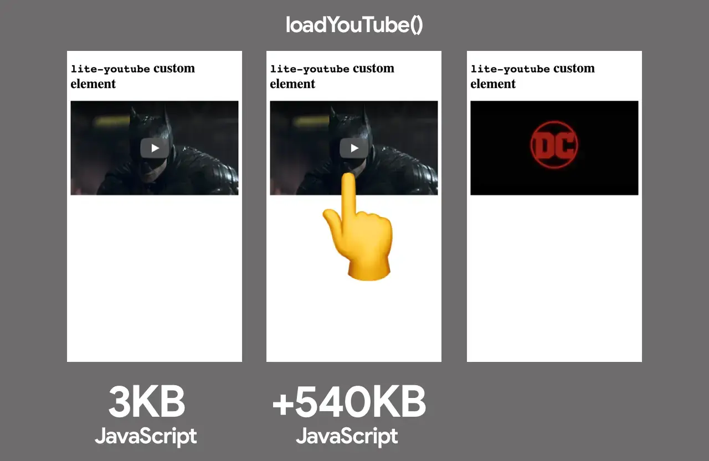
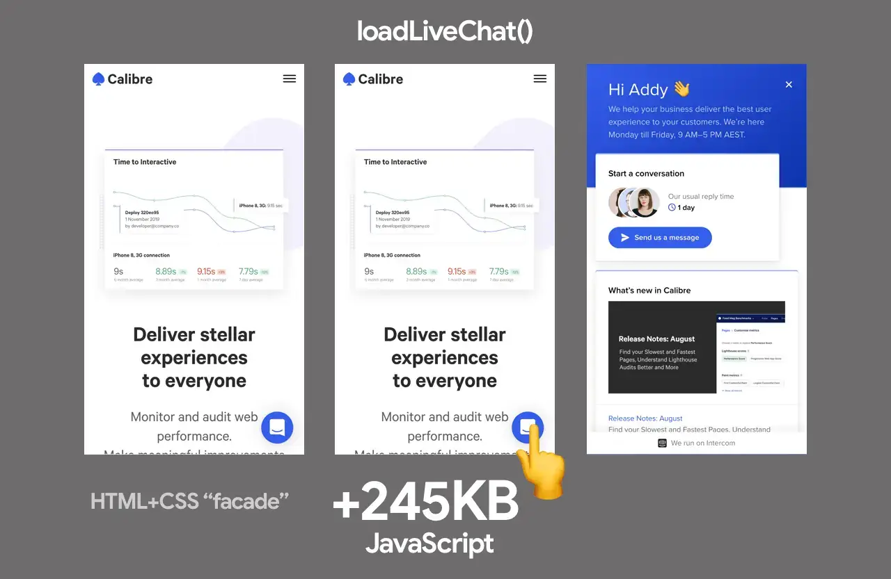
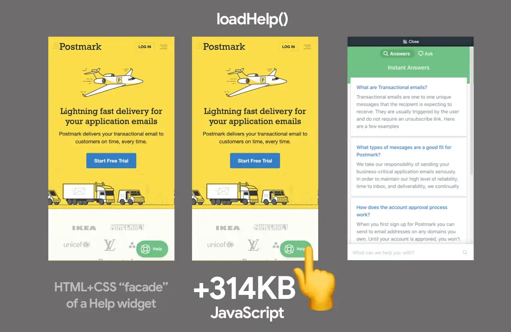
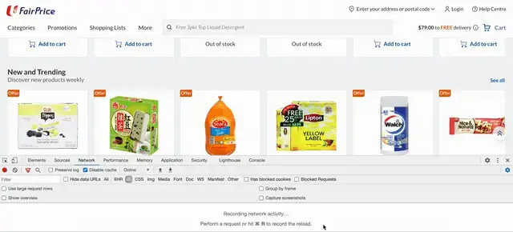
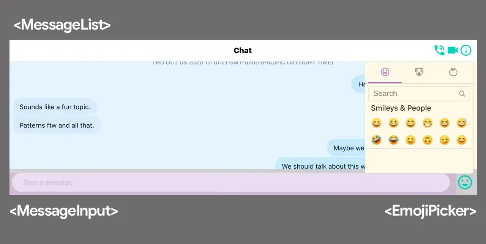
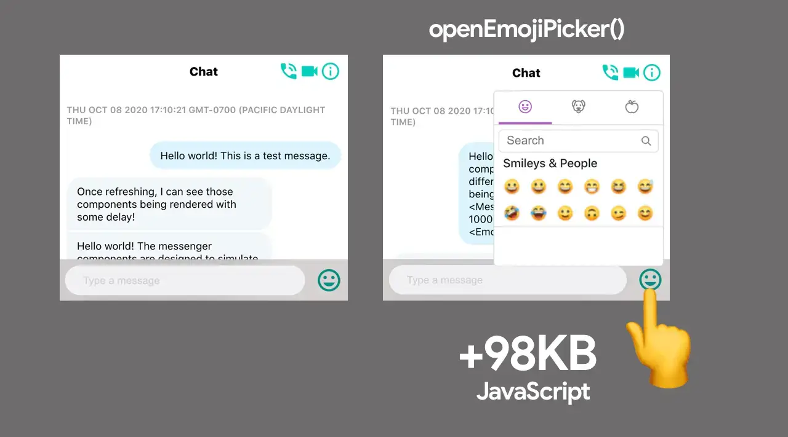
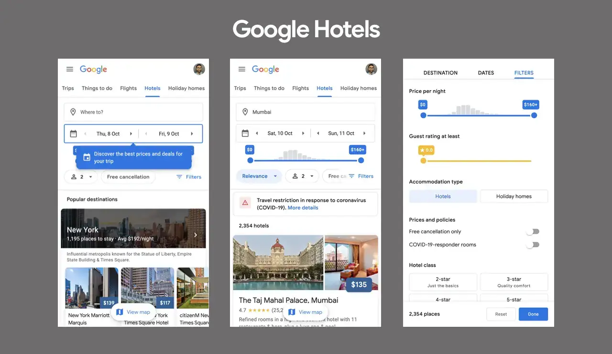
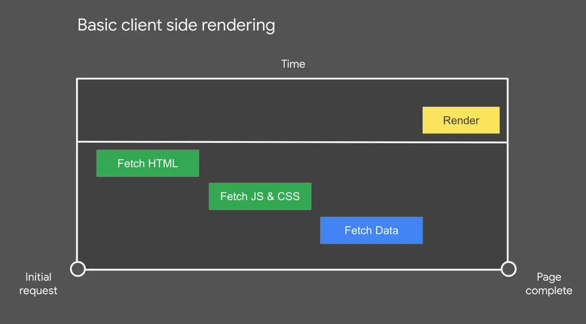
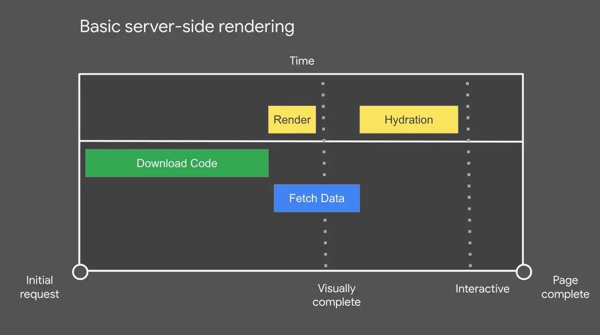
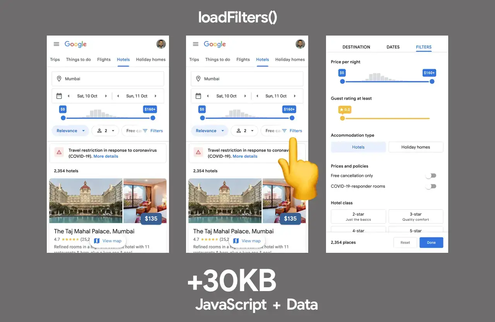
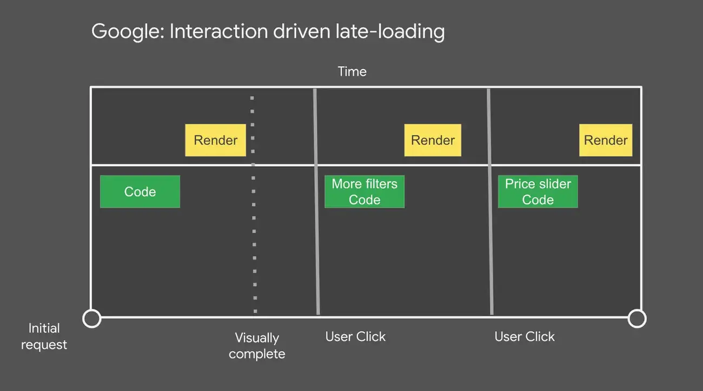
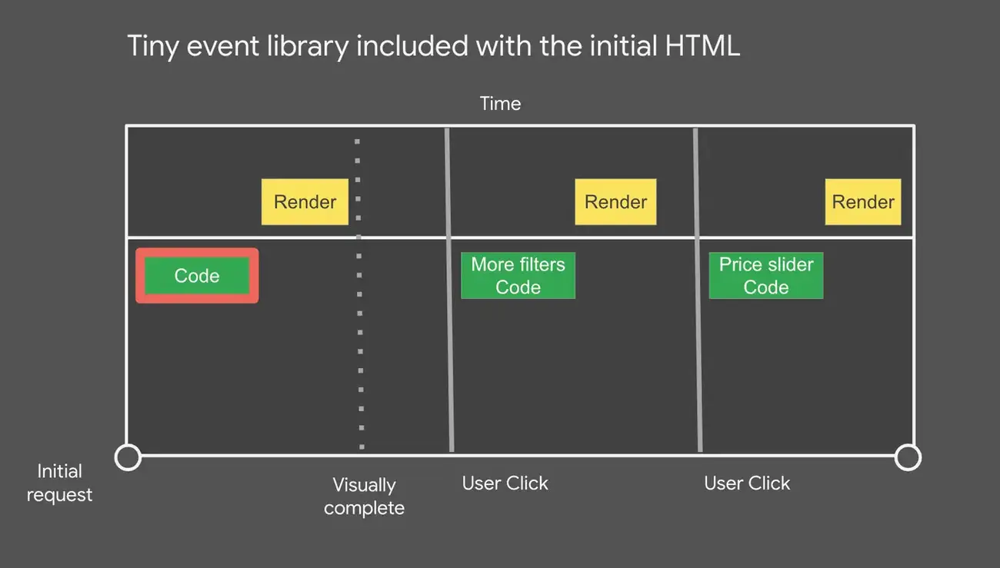
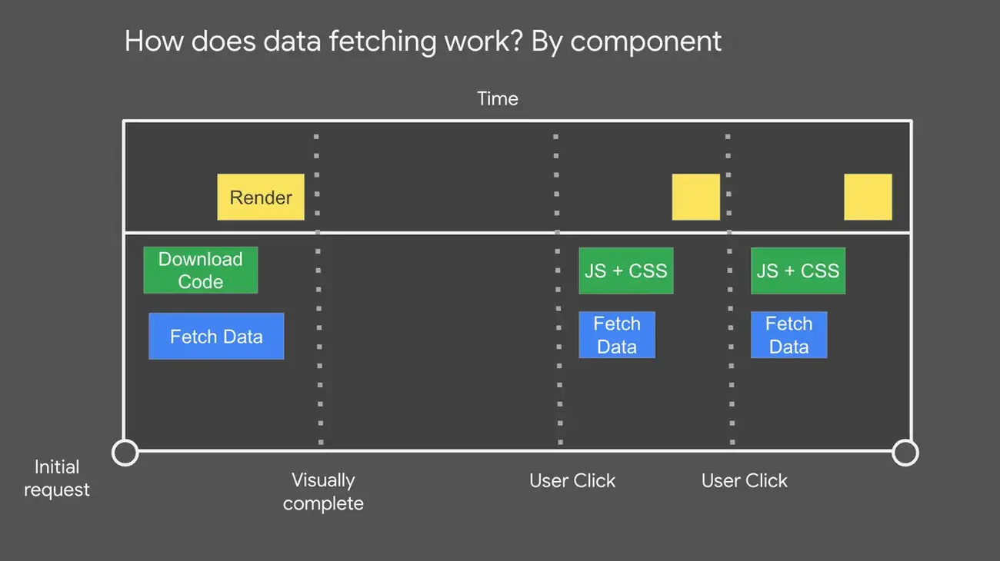
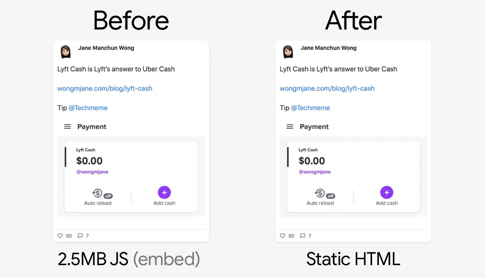